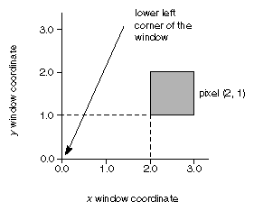
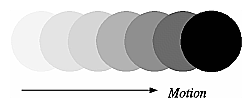
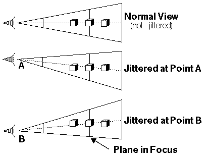

After reading this chapter, you'll be able to do the following:
Clear selected buffers and enable them for writing
Control the parameters of the scissoring, alpha, stencil, and depth-buffer
tests that are applied to pixels
Perform dithering and logical operations
Use the accumulation buffer for such purposes as scene antialiasing
As shown in Figure 10-1 , the lower left pixel in an OpenGL window is pixel (0, 0), corresponding to the window coordinates of the lower left corner of the 1 × 1 region occupied by this pixel. In general, pixel (x, y) fills the region bounded by x on the left, x+1 on the right, y on the bottom, and y+1 on the top.

Figure 10-1 : The Region Occupied by a Pixel
As an example of a buffer, let's look more closely at the color buffer, which holds the color information that's to be displayed on the screen. Assume that the screen is 1280 pixels wide and 1024 pixels high and that it's a full 24-bit color screen - in other words, there are 224 (or 16,777,216) different colors that can be displayed. Since 24 bits translates to three bytes (8 bits/byte), the color buffer in this example has to store at least three bytes of data for each of the 1024*1280 (= 1,310,720) pixels on the screen. A particular hardware system might have more or fewer pixels on the physical screen as well as more or less color data per pixel. Any particular color buffer, however, has the same amount of data saved for each pixel on the screen.
The color buffer is only one of several buffers that hold information about a pixel. In "Hidden-Surface Removal Survival Kit," for example, you learned that the depth buffer holds depth information for each pixel. The color buffer itself can consist of several subbuffers. The framebuffer on a system comprises all of these buffers. With the exception of the color buffer(s), you don't view these other buffers directly; instead, you use them to perform such tasks as hidden-surface elimination, antialiasing of an entire scene, stenciling, drawing smooth motion, and other operations.
This chapter describes all the buffers that can exist in an OpenGL implementation and how they're used. It also discusses the series of tests and pixel operations that are performed before any data is written to the viewable color buffer. Finally, it explains how to use the accumulation buffer, which is used to accumulate images that are drawn into the color buffer. This chapter has the following major sections:
"Testing and Operating on Fragments" explains the scissoring, alpha,
stencil, and depth-buffer tests that occur after a pixel's position and
color have been calculated but before this information is drawn on the
screen. Several operations - blending, dithering, and logical operations
- can also be performed before a fragment updates the screen.
"The Accumulation Buffer" describes how to perform several advanced techniques using the accumulation buffer. These techniques include antialiasing an entire scene, using motion blur, and simulating photographic depth of field.
Depth buffer
Stencil buffer
Accumulation buffer
| Parameter | Meaning |
|---|---|
| GL_RED_BITS, GL_GREEN_BITS,
GL_BLUE_BITS, GL_ALPHA_BITS |
Number of bits per R, G, B, or A component in the color buffers |
| GL_DEPTH_BITS | Number of bits per pixel in the depth buffer |
| GL_STENCIL_BITS | Number of bits per pixel in the stencil buffer |
| GL_ACCUM_RED_BITS,
GL_ACCUM_GREEN_BITS, GL_ACCUM_BLUE_BITS, GL_ACCUM_ALPHA_BITS |
Number of bits per R, G, B, or A component in the accumulation buffer |
Up to four optional, nondisplayable auxiliary color buffers can also be supported. OpenGL doesn't specify any particular uses for these buffers, so you can define and use them however you please. For example, you might use them for saving an image that you use repeatedly; rather than redrawing the image, you can just copy it into the usual color buffers. See the description of glCopyPixels() in "Reading, Writing, and Copying Pixel Data" for more information about how to do this.
You can use GL_STEREO or GL_DOUBLE_BUFFER with glGetBooleanv() to find out if your system supports stereo (that is, has left and right buffers) or double-buffering (has front and back buffers). To find out how many auxiliary buffers are present, use glGetIntegerv() with GL_AUX_BUFFERS.
To address this problem, some machines have hardware that can clear more than one buffer at once. The OpenGL clearing commands are structured to take advantage of architectures like this. First, you specify the values to be written into each buffer to be cleared. Then you issue a single command to perform the clear operation, passing in a list of all the buffers to be cleared. If the hardware is capable of simultaneous clears, they all occur at once; otherwise, each buffer is cleared sequentially.
The following commands set the clearing values for each buffer.void
glClearColor(GLclampf red, GLclampf green, GLclampf
blue, GLclampf alpha);
void glClearIndex(GLfloat index);
void glClearDepth(GLclampd depth);
void glClearStencil(GLint s);
void glClearAccum(GLfloat red, GLfloat green,
GLfloat blue, GLfloat alpha);
Specifies the current clearing values for the color buffer (in RGBA mode), the color buffer (in color-index mode), the depth buffer, the stencil buffer, and the accumulation buffer. The GLclampf and GLclampd types (clamped GLfloat and clamped GLdouble) are clamped to be between 0.0 and 1.0. The default depth-clearing value is 1.0; all the other default clearing values are 0. The values set with the clear commands remain in effect until they're changed by another call to the same command.
After you've selected your clearing values and you're ready to clear the buffers, use glClear(). void glClear(GLbitfield mask);
Clears the specifed buffers. The value of mask is the bitwise logical OR of some combination of GL_COLOR_BUFFER_BIT, GL_DEPTH_BUFFER_BIT, GL_STENCIL_BUFFER_BIT, and GL_ACCUM_BUFFER_BIT, to identify which buffers are to be cleared. GL_COLOR_BUFFER_BIT clears either the RGBA color or the color-index buffer, depending on the mode of the system at the time. When you clear the color or color-index buffer, all the color buffers that are enabled for writing (see the next section) are cleared.
Selects the buffers enabled for writing or clearing. The value of mode can be one of the following:
GL_FRONT
GL_BACK
GL_RIGHT
GL_LEFT
GL_FRONT_RIGHT
GL_FRONT_LEFT
GL_BACK_RIGHT
GL_BACK_LEFT
GL_AUXi
GL_FRONT_AND_BACK
GL_NONE
Arguments that omit RIGHT or LEFT refer to both the left and right buffers; similarly, arguments that omit FRONT or BACK refer to both. The i in GL_AUXi is a digit identifying a particular auxiliary buffer.
You can enable drawing to nonexistent buffers as long as you enable drawing to at least one buffer that does exist. If none of the specified buffers exist, an error results.
Sets the masks used to control writing into the indicated buffers. The mask set by glIndexMask() applies only in color-index mode. If a 1 appears in mask, the corresponding bit in the color-index buffer is written; where a 0 appears, the bit isn't written. Similarly, glColorMask() affects drawing in RGBA mode only. The red, green, blue, and alpha values control whether the corresponding component is written. (GL_TRUE means it is written.) If flag is GL_TRUE for glDepthMask(), the depth buffer is enabled for writing; otherwise, it's disabled. The mask for glStencilMask() is used for stencil data in the same way as the mask is used for color-index data in glIndexMask(). The default values of all the GLboolean masks are GL_TRUE, and the default values for the two GLuint masks are all 1s.
You can do plenty of tricks with color masking in color-index mode. For example, you can use each bit in the index as a different layer, and set up interactions between arbitrary layers with appropriate settings of the color map. You can create overlays and underlays, and do so-called color-map animations. See Chapter 13 for examples of using color masking. Masking in RGBA mode is useful less often, but you can use it for loading separate image files into the red, green, and blue bitplanes, for example.
You've seen one use for disabling the depth buffer in "Three-Dimensional Blending with the Depth Buffer." Disabling the depth buffer for writing can also be useful if a common background is desired for a series of frames, and you want to add some features that may be obscured by parts of the background. For example, suppose your background is a forest, and you would like to draw repeated frames with the same trees, but with objects moving among them. After the trees are drawn with their depths recorded in the depth buffer, then the image of the trees is saved, and the new items are drawn with the depth buffer disabled for writing. As long as the new items don't overlap each other, the picture is correct. To draw the next frame, restore the image of the trees and continue. You don't need to restore the values in the depth buffer. This trick is most useful if the background is extremely complex - so complex that it's much faster just to recopy the image into the color buffer than to recompute it from the geometry.
Masking the stencil buffer can allow you to use a multiple-bit stencil buffer to hold multiple stencils (one per bit). You might use this technique to perform capping as explained in "Stencil Test" or to implement the Game of Life as described in "Life in the Stencil Buffer."
The mask specified by glStencilMask() controls which stencil bitplanes are written. This mask isn't related to the mask that's specified as the third parameter of glStencilFunc(), which specifies which bitplanes are considered by the stencil function.
This section describes both the complete set of tests that a fragment must pass before it goes into the framebuffer and the possible final operations that can be performed on the fragment as it's written. The tests and operations occur in the following order; if a fragment is eliminated in an early test, none of the later tests or operations take place.
Alpha test
Stencil test
Depth test
Blending
Dithering
Logical operation
Sets the location and size of the scissor rectangle. The parameters define the lower left corner (x, y), and the width and height of the rectangle. Pixels that lie inside the rectangle pass the scissor test. Scissoring is enabled and disabled by passing GL_SCISSOR to glEnable() and glDisable(). By default, the rectangle matches the size of the window and scissoring is disabled.
The scissor test is just a version of a stencil test using a rectangular region of the screen. It's fairly easy to create a blindingly fast hardware implementation of scissoring, while a given system might be much slower at stenciling - perhaps because the stenciling is performed in software.
Advanced
As an advanced use of scissoring, you might use it to perform nonlinear projection. First, divide the window into a regular grid of subregions, specifying viewport and scissor parameters that limit rendering to one region at a time. Then project the entire scene to each region using a different projection matrix.
You can use GL_SCISSOR_TEST with glIsEnabled() and GL_SCISSOR_BOX with glGetIntegerv() to determine whether scissoring is enabled and to obtain the values that define the scissor rectangle.
Sets the reference value and comparison function for the alpha test. The reference value ref is clamped to be between 0 and 1. The possible values for func and their meaning are listed in Table 10-2 .
| Parameter | Meaning |
|---|---|
| GL_NEVER | Never accept the fragment |
| GL_ALWAYS | Always accept the fragment |
| GL_LESS | Accept fragment if fragment alpha < reference alpha |
| GL_LEQUAL | Accept fragment if fragment alpha ≤ reference alpha |
| GL_EQUAL | Accept fragment if fragment alpha = reference alpha |
| GL_GEQUAL | Accept fragment if fragment alpha ≥ reference alpha |
| GL_GREATER | Accept fragment if fragment alpha > reference alpha |
| GL_NOTEQUAL | Accept fragment if fragment alpha ≠ reference alpha |
The alpha test is enabled and disabled by passing GL_ALPHA_TEST to glEnable() and glDisable(). By default, the reference value is zero, the comparison function is GL_ALWAYS, and the alpha test is disabled.
One application for the alpha test is to implement a transparency algorithm. Render your entire scene twice, the first time accepting only fragments with alpha values of one, and the second time accepting fragments with alpha values that aren't equal to one. Turn the depth buffer on during both passes, but disable depth buffer writing during the second pass.
Another use might be to make decals with texture maps where you can see through certain parts of the decals. Set the alphas in the decals to 0.0 where you want to see through, set them to 1.0 otherwise, set the reference value to 0.5 (or anything between 0.0 and 1.0), and set the comparison function to GL_GREATER. The decal has see-through parts, and the values in the depth buffer aren't affected. This technique, called billboarding, is described in "Sample Uses of Blending."
Sets the comparison function (func), reference value (ref), and a mask (mask) for use with the stencil test. The reference value is compared to the value in the stencil buffer using the comparison function, but the comparison applies only to those bits where the corresponding bits of the mask are 1. The function can be GL_NEVER, GL_ALWAYS, GL_LESS, GL_LEQUAL, GL_EQUAL, GL_GEQUAL, GL_GREATER, or GL_NOTEQUAL. If it's GL_LESS, for example, then the fragment passes if ref is less than the value in the stencil buffer. If the stencil buffer contains s bitplanes, the low-order s bits of mask are bitwise ANDed with the value in the stencil buffer and with the reference value before the comparison is performed. The masked values are all interpreted as nonnegative values. The stencil test is enabled and disabled by passing GL_STENCIL_TEST to glEnable() and glDisable(). By default, func is GL_ALWAYS, ref is 0, mask is all 1s, and stenciling is disabled.
void glStencilOp(GLenum fail, GLenum zfail, GLenum zpass);
Specifies how the data in the stencil buffer is modified when a fragment passes or fails the stencil test. The three functions fail, zfail, and zpass can be GL_KEEP, GL_ZERO, GL_REPLACE, GL_INCR, GL_DECR, or GL_INVERT. They correspond to keeping the current value, replacing it with zero, replacing it with the reference value, incrementing it, decrementing it, and bitwise-inverting it. The result of the increment and decrement functions is clamped to lie between 0 and the maximum unsigned integer value (2s-1 if the stencil buffer holds s bits). The fail function is applied if the fragment fails the stencil test; if it passes, then zfail is applied if the depth test fails and zpass if the depth test passes, or if no depth test is performed. (See "Depth Test." ) By default, all three stencil operations are GL_KEEP.
| Query Value | Meaning |
|---|---|
| GL_STENCIL_FUNC | Stencil function |
| GL_STENCIL_REF | Stencil reference value |
| GL_STENCIL_VALUE_MASK | Stencil mask |
| GL_STENCIL_FAIL | Stencil fail action |
| GL_STENCIL_PASS_DEPTH_FAIL | Stencil pass and depth buffer fail action |
| GL_STENCIL_PASS_DEPTH_PASS | Stencil pass and depth buffer pass action |
After you've defined the stencil area, set the reference value to 1, and the comparison function such that the fragment passes if the reference value is equal to the stencil-plane value. During drawing, don't modify the contents of the stencil planes.
Example 10-1 demonstrates how to use the stencil test in this way. Two tori are drawn, with a diamond-shaped cutout in the center of the scene. Within the diamond-shaped stencil mask, a sphere is drawn. In this example, drawing into the stencil buffer takes place only when the window is redrawn, so the color buffer is cleared after the stencil mask has been created.
Example 10-1 : Using the Stencil Test: stencil.c
#include <GL/gl.h>
#include <GL/glu.h>
#include "aux.h"
#define YELLOWMAT 1
#define BLUEMAT 2
void myinit (void)
{
GLfloat yellow_diffuse[] = { 0.7, 0.7, 0.0, 1.0 };
GLfloat yellow_specular[] = { 1.0, 1.0, 1.0, 1.0 };
GLfloat blue_diffuse[] = { 0.1, 0.1, 0.7, 1.0 };
GLfloat blue_specular[] = { 0.1, 1.0, 1.0, 1.0 };
GLfloat position_one[] = { 1.0, 1.0, 1.0, 0.0 };
glNewList(YELLOWMAT, GL_COMPILE);
glMaterialfv(GL_FRONT, GL_DIFFUSE, yellow_diffuse);
glMaterialfv(GL_FRONT, GL_SPECULAR, yellow_specular);
glMaterialf(GL_FRONT, GL_SHININESS, 64.0);
glEndList();
glNewList(BLUEMAT, GL_COMPILE);
glMaterialfv(GL_FRONT, GL_DIFFUSE, blue_diffuse);
glMaterialfv(GL_FRONT, GL_SPECULAR, blue_specular);
glMaterialf(GL_FRONT, GL_SHININESS, 45.0);
glEndList();
glLightfv(GL_LIGHT0, GL_POSITION, position_one);
glEnable(GL_LIGHT0);
glEnable(GL_LIGHTING);
glDepthFunc(GL_LEQUAL);
glEnable(GL_DEPTH_TEST);
glClearStencil(0x0);
glEnable(GL_STENCIL_TEST);
}
void display(void)
{
glClear(GL_COLOR_BUFFER_BIT | GL_DEPTH_BUFFER_BIT);
/* draw blue sphere where the stencil is 1 */
glStencilFunc (GL_EQUAL, 0x1, 0x1);
glCallList (BLUEMAT);
auxSolidSphere (0.5);
/* draw the tori where the stencil is not 1 */
glStencilFunc (GL_NOTEQUAL, 0x1, 0x1);
glStencilOp (GL_KEEP, GL_KEEP, GL_KEEP);
glPushMatrix();
glRotatef (45.0, 0.0, 0.0, 1.0);
glRotatef (45.0, 0.0, 1.0, 0.0);
glCallList (YELLOWMAT);
auxSolidTorus (0.275, 0.85);
glPushMatrix();
glRotatef (90.0, 1.0, 0.0, 0.0);
auxSolidTorus (0.275, 0.85);
glPopMatrix();
glPopMatrix();
}
void myReshape(GLsizei w, GLsizei h)
{
glViewport(0, 0, w, h);
glClear(GL_STENCIL_BUFFER_BIT);
/* create a diamond-shaped stencil area */
glMatrixMode(GL_PROJECTION);
glLoadIdentity();
glOrtho(-3.0, 3.0, -3.0, 3.0, -1.0, 1.0);
glMatrixMode(GL_MODELVIEW);
glLoadIdentity();
glStencilFunc (GL_ALWAYS, 0x1, 0x1);
glStencilOp (GL_REPLACE, GL_REPLACE, GL_REPLACE);
glBegin(GL_QUADS);
glVertex3f (-1.0, 0.0, 0.0);
glVertex3f (0.0, 1.0, 0.0);
glVertex3f (1.0, 0.0, 0.0);
glVertex3f (0.0, -1.0, 0.0);
glEnd();
glMatrixMode(GL_PROJECTION);
glLoadIdentity();
gluPerspective(45.0, (GLfloat) w/(GLfloat) h, 3.0, 7.0);
glMatrixMode(GL_MODELVIEW);
glLoadIdentity();
glTranslatef(0.0, 0.0, -5.0);
}
int main(int argc, char** argv)
{
auxInitDisplayMode (AUX_SINGLE | AUX_RGBA
| AUX_DEPTH | AUX_STENCIL);
auxInitPosition (0, 0, 400, 400);
auxInitWindow (argv[0]);
myinit ();
auxReshapeFunc (myReshape);
auxMainLoop(display);
}
The following examples illustrate other uses of the stencil test. See Chapter
13 for additional ideas.
Overlapping translucent polygons - Suppose you have a translucent surface
that's made up of polygons that overlap slightly. If you simply use alpha
blending, portions of the underlying objects are covered by more than one
transparent surface, which doesn't look right. Use the stencil planes to
make sure that each fragment is covered by at most one portion of the transparent
surface. Do this by clearing the stencil planes to zero, drawing only when
the stencil plane is zero, and incrementing the value in the stencil plane
when you draw.
Stippling - Suppose you want to draw an image with a stipple pattern (see "Displaying Points, Lines, and Polygons" for more information about stippling). You can do this by writing the stipple pattern into the stencil buffer, and then drawing conditionally on the contents of the stencil buffer. After the original stipple pattern is drawn, the stencil buffer aren't altered while drawing the image, so the object gets stippled by the pattern in the stencil planes.
The depth buffer is usually used for hidden-surface elimination. If a new candidate color for that pixel appears, it's drawn only if the corresponding object is closer than the previous object. In this way, only objects that aren't obscured by other items remain after the entire scene has been rendered. During initialization, the depth buffer is typically filled with a value that's as far from the viewpoint as possible, so any object is nearer than that. If this is how you want to use the depth buffer, you simply have to enable it by passing GL_DEPTH_TEST to glEnable() and remember to clear the depth buffer before you redraw each frame (see "Clearing Buffers" ). You can also choose a different comparison function for the depth test with glDepthFunc().void glDepthFunc(GLenum func);
Sets the comparison function for the depth test. The value for func must be GL_NEVER, GL_ALWAYS, GL_LESS, GL_LEQUAL, GL_EQUAL, GL_GEQUAL, GL_GREATER, or GL_NOTEQUAL. An incoming fragment passes the depth test if its z value has the specified relation to the value already stored in the depth buffer. The default is GL_LESS, which means that an incoming fragment passes the test if its z value is less than that already stored in the depth buffer. In this case, the z value represents the distance from the object to the viewpoint, and smaller values mean the corresponding objects are closer to the viewpoint.
The dithering operation that takes place is hardware-dependent; all OpenGL allows you to do is to turn it on and off. In fact, on some machines, enabling dithering might do nothing at all, which makes sense if the machine already has high color resolution. To enable and disable dithering, pass GL_DITHER to glEnable() and glDisable(). Dithering is enabled by default.
Dithering applies in both RGBA and color-index mode: The colors or color indices alternate in some hardware-dependent way between the two nearest possibilities. For example, in color-index mode, if dithering is enabled and the color index to be painted is 4.4, then six-tenths of the pixels are painted with index 4 and four-tenths of the pixels with index 5. In RGBA mode, dithering is performed separately for each component (including alpha). To use dithering in color-index mode, you generally need to arrange the colors in the color map appropriately in ramps, or bizarre images might result.
In RGBA mode, dithering is the final step before the resulting values are written into the color buffers; in color-index mode, you can perform one of the logical operations described in the next section.
Such fragment operations are especially useful on bit-blt-type machines, on which the primary graphics operation is copying a rectangle of data from one place in the window to another, from the window to processor memory, or from memory to the window. Typically, the copy doesn't write the data directly into memory but instead allows you to perform an arbitrary logical operation on the incoming data and the data already present; then it replaces the existing data with the results of the operation. Since this process can be implemented fairly cheaply in hardware, many such machines are available. As an example of using a logical operation, XOR can be used to draw on an image in an undoable way; simply XOR the same drawing again, and the original image is restored.
You choose among the sixteen logical operations with glLogicOp(), and you enable and disable logical operations by passing GL_LOGIC_OP to glEnable() and glDisable().void glLogicOp(GLenum opcode);
In color-index mode, selects the logical operation to be performed, given an incoming (source) fragment and the pixel currently stored in the color buffer (destination). Table 10-4 shows the possible values for opcode and their meaning (s represents source and d destination). The default value is GL_COPY.
| Paramter | Operation | Parameter | Operation |
|---|---|---|---|
| GL_CLEAR | 0 | GL_AND | s ∧ d |
| GL_COPY |
s |
GL_OR |
s ∨ d |
| GL_NOOP |
d |
GL_NAND |
¬(s ∧ d) |
| GL_SET | 1 | GL_NOR |
¬(s ∨ d) |
| GL_COPY_INVERTE D | ¬s | GL_XOR |
s XOR d |
| GL_INVERT | ¬d | GL_EQUIV |
¬(s XOR d) |
| GL_AND_REVERSE |
s ∧ ¬d |
GL_AND_INVERTED |
¬s ∧ d |
| GL_OR_REVERSE |
s ∨ ¬d |
GL_OR_INVERTED |
¬s ∨ d |
The accumulation buffer can be used for such things as scene antialiasing, motion blur, simulating photographic depth of field, and calculating the soft shadows that result from multiple light sources. Other techniques are possible, especially in combination with some of the other buffers. (For more information on the uses for the accumulation buffer, see The Accumulation Buffer: Hardware Support for High-Quality Rendering by Paul Haeberli and Kurt Akeley (SIGGRAPH 1990 Proceedings, p. 309-318).
OpenGL graphics operations don't write directly into the accumulation buffer. Typically, a series of images is generated in one of the standard color buffers, and these are accumulated, one at a time, into the accumulation buffer. When the accumulation is finished, the result is copied back into a color buffer for viewing. To reduce rounding errors, the accumulation buffer may have higher precision (more bits per color) than the standard color buffers. Rendering a scene several times obviously takes longer than rendering it once, but the result is higher quality. You can decide what trade-off between quality and rendering time is appropriate for your application.
You can use the accumulation buffer the same way a photographer can use film for multiple exposures. A photographer typically creates a multiple exposure by taking several pictures of the same scene without advancing the film. If anything in the scene moves, that object appears blurred. Not surprisingly, a computer can do more with an image than a photographer can do with a camera. For example, a computer has exquisite control over the viewpoint, but a photographer can't shake a camera a predictable and controlled amount.
See "Clearing Buffers" for information about how to clear the accumulation buffer; use glAccum() to control it. void glAccum(GLenum op, GLfloat value);
Controls the accumulation buffer. The op parameter selects the operation, and value is a number to be used in that operation. The possible operations are GL_ACCUM, GL_LOAD, GL_RETURN, GL_ADD, and GL_MULT:
GL_LOAD does the same thing, except that the values replace those in
the accumulation buffer rather than being added to them.
GL_RETURN takes values from the accumulation buffer, multiplies them
by value, and places the result in the color buffer(s) enabled for
writing.
GL_ADD and GL_MULT simply add or multiply the value of each pixel in the accumulation buffer by value, and then return it to the accumulation buffer. For GL_MULT, value is clamped to be in the range [-1.0,1.0]. For GL_ADD, no clamping occurs.
glAccum(GL_ACCUM, 1.0/n);and finally calling
glAccum(GL_RETURN, 1.0);Note that this method is a bit faster if, on the first pass through the loop, GL_LOAD is used and clearing the accumulation buffer is omitted. See the section on "Logical Operations" later in this chapter for possible jittering values. With this code, the image is drawn n times before the final image is drawn. If you want to avoid showing the user the intermediate images, draw into a color buffer that's not displayed, accumulate from that, and use the GL_RETURN call to draw into a displayed buffer (or into a back buffer that you subsequently swap to the front).
You could instead present a user interface that shows the viewed image improving as each additional piece is accumulated and that allows the user to halt the process when the image is good enough. To accomplish this, in the loop that draws successive images, call glAccum() with GL_RETURN after each accumulation, using 16.0/1.0, 16.0/2.0, 16.0/3.0, ... as the second argument. With this technique, after one pass, 1/16 of the final image is shown, after two passes, 2/16 is shown, and so on. After the GL_RETURN, the code should check to see if the user wants to interrupt the process. This interface is slightly slower, since the resultant image must be copied in after each pass.
To decide what n should be, you need to trade off speed (the more times you draw the scene, the longer it takes to obtain the final image) and quality (the more times you draw the scene, the smoother it gets, until you make maximum use of the accumulation buffer's resolution). Figure J-30 and Figure J-32 show improvements made using scene antialiasing.
Example 10-2 defines two routines for jittering that you might find useful: accPerspective() and accFrustum(). The routine accPerspective() is used in place of gluPerspective(), and the first four parameters of both routines are the same. To jitter the viewing frustum for scene antialiasing, pass the x and y jitter values (of less than one pixel) to the fifth and sixth parameters of accPerspective(). Also, pass 0.0 for the seventh and eighth parameters to accPerspective() and a nonzero value for the ninth parameter (to prevent division by zero inside accPerspective()). These last three parameters are used for depth-of-field effects, which are described later in this chapter.
Example 10-2 : Useful Routines for Jittering the Viewing Volume: accpersp.c
void accFrustum(GLdouble left, GLdouble right, GLdouble bottom,
GLdouble top, GLdouble near, GLdouble far, GLdouble pixdx,
GLdouble pixdy, GLdouble eyedx, GLdouble eyedy,
GLdouble focus)
{
GLdouble xwsize, ywsize;
GLdouble dx, dy;
GLint viewport[4];
glGetIntegerv (GL_VIEWPORT, viewport);
xwsize = right - left;
ywsize = top - bottom;
dx = -(pixdx*xwsize/(GLdouble) viewport[2] +
eyedx*near/focus);
dy = -(pixdy*ywsize/(GLdouble) viewport[3] +
eyedy*near/focus);
glMatrixMode(GL_PROJECTION);
glLoadIdentity();
glFrustum (left + dx, right + dx, bottom + dy, top + dy,
near, far);
glMatrixMode(GL_MODELVIEW);
glLoadIdentity();
glTranslatef (-eyedx, -eyedy, 0.0);
}
void accPerspective(GLdouble fovy, GLdouble aspect,
GLdouble near, GLdouble far, GLdouble pixdx, GLdouble pixdy,
GLdouble eyedx, GLdouble eyedy, GLdouble focus)
{
GLdouble fov2,left,right,bottom,top;
fov2 = ((fovy*PI_) / 180.0) / 2.0;
top = near / (fcos(fov2) / fsin(fov2));
bottom = -top;
right = top * aspect;
left = -right;
accFrustum (left, right, bottom, top, near, far,
pixdx, pixdy, eyedx, eyedy, focus);
}
Example 10-3 uses these two routines to perform scene antialiasing.
Example 10-3 : Scene Antialiasing: accpersp.c
#include <GL/gl.h>
#include <GL/glu.h>
#include <math.h>
#include "aux.h"
#include "jitter.h"
void myinit(void)
{
GLfloat mat_ambient[] = { 1.0, 1.0, 1.0, 1.0 };
GLfloat mat_specular[] = { 1.0, 1.0, 1.0, 1.0 };
GLfloat light_position[] = { 0.0, 0.0, 10.0, 1.0 };
GLfloat lm_ambient[] = { 0.2, 0.2, 0.2, 1.0 };
glMaterialfv(GL_FRONT, GL_AMBIENT, mat_ambient);
glMaterialfv(GL_FRONT, GL_SPECULAR, mat_specular);
glMaterialf(GL_FRONT, GL_SHININESS, 50.0);
glLightfv(GL_LIGHT0, GL_POSITION, light_position);
glLightModelfv(GL_LIGHT_MODEL_AMBIENT, lm_ambient);
glEnable(GL_LIGHTING);
glEnable(GL_LIGHT0);
glDepthFunc(GL_LEQUAL);
glEnable(GL_DEPTH_TEST);
glShadeModel (GL_FLAT);
glClearColor(0.0, 0.0, 0.0, 0.0);
glClearAccum(0.0, 0.0, 0.0, 0.0);
}
void displayObjects(void)
{
GLfloat torus_diffuse[] = { 0.7, 0.7, 0.0, 1.0 };
GLfloat cube_diffuse[] = { 0.0, 0.7, 0.7, 1.0 };
GLfloat sphere_diffuse[] = { 0.7, 0.0, 0.7, 1.0 };
GLfloat octa_diffuse[] = { 0.7, 0.4, 0.4, 1.0 };
glPushMatrix ();
glTranslatef (0.0, 0.0, -5.0);
glRotatef (30.0, 1.0, 0.0, 0.0);
glPushMatrix ();
glTranslatef (-0.80, 0.35, 0.0);
glRotatef (100.0, 1.0, 0.0, 0.0);
glMaterialfv(GL_FRONT, GL_DIFFUSE, torus_diffuse);
auxSolidTorus (0.275, 0.85);
glPopMatrix ();
glPushMatrix ();
glTranslatef (-0.75, -0.50, 0.0);
glRotatef (45.0, 0.0, 0.0, 1.0);
glRotatef (45.0, 1.0, 0.0, 0.0);
glMaterialfv(GL_FRONT, GL_DIFFUSE, cube_diffuse);
auxSolidCube (1.5);
glPopMatrix ();
glPushMatrix ();
glTranslatef (0.75, 0.60, 0.0);
glRotatef (30.0, 1.0, 0.0, 0.0);
glMaterialfv(GL_FRONT, GL_DIFFUSE, sphere_diffuse);
auxSolidSphere (1.0);
glPopMatrix ();
glPushMatrix ();
glTranslatef (0.70, -0.90, 0.25);
glMaterialfv(GL_FRONT, GL_DIFFUSE, octa_diffuse);
auxSolidOctahedron (1.0);
glPopMatrix ();
glPopMatrix ();
}
#define ACSIZE 8
void display(void)
{
GLint viewport[4];
int jitter;
glGetIntegerv (GL_VIEWPORT, viewport);
glClear(GL_ACCUM_BUFFER_BIT);
for (jitter = 0; jitter < ACSIZE; jitter++) {
glClear(GL_COLOR_BUFFER_BIT | GL_DEPTH_BUFFER_BIT);
accPerspective (50.0,
(GLdouble) viewport[2]/(GLdouble) viewport[3],
1.0, 15.0, j8[jitter].x, j8[jitter].y,
0.0, 0.0, 1.0);
displayObjects ();
glAccum(GL_ACCUM, 1.0/ACSIZE);
}
glAccum (GL_RETURN, 1.0);
glFlush();
}
void myReshape(GLsizei w, GLsizei h)
{
glViewport(0, 0, w, h);
}
int main(int argc, char** argv)
{
auxInitDisplayMode (AUX_SINGLE | AUX_RGBA
| AUX_ACCUM | AUX_DEPTH);
auxInitPosition (0, 0, 250, 250);
auxInitWindow (argv[0]);
myinit();
auxReshapeFunc (myReshape);
auxMainLoop(display);
}
You don't have to use a perspective projection to perform scene antialiasing.
You can antialias a scene with orthographic projection simply by using
glTranslate*() to jitter the scene. Keep in mind that glTranslate*()
operates in world coordinates, but you want the apparent motion of the
scene to be less than one pixel, measured in screen coordinates. Thus,
you must reverse the world-coordinate mapping by calculating the jittering
translation values, using its width or height in world coordinates divided
by its viewport size. Then, multiply that world-coordinate value by the
amount of jitter to determine how much the scene should be moved in world
coordinates to get a predictable jitter of less than one pixel. Example
10-4 shows how the display() and myReshape() routines might
look with a world-coordinate width and height of 4.5.
Example 10-4 : Jittering with an Orthographic Projection: accanti.c
#define ACSIZE 8
void display(void)
{
GLint viewport[4];
int jitter;
glGetIntegerv (GL_VIEWPORT, viewport);
glClear(GL_ACCUM_BUFFER_BIT);
for (jitter = 0; jitter < ACSIZE; jitter++) {
glClear(GL_COLOR_BUFFER_BIT | GL_DEPTH_BUFFER_BIT);
/* Note that 4.5 is the distance in world space between
* left and right and bottom and top. The following formula
* converts fractional pixel movement to world coordinates.
*/
glPushMatrix ();
glTranslatef (j8[jitter].x*4.5/viewport[2],
j8[jitter].y*4.5/viewport[3], 0.0);
displayObjects ();
glPopMatrix ();
glAccum(GL_ACCUM, 1.0/ACSIZE);
}
glAccum (GL_RETURN, 1.0);
glFlush();
}
void myReshape(GLsizei w, GLsizei h)
{
glViewport(0, 0, w, h);
glMatrixMode(GL_PROJECTION);
glLoadIdentity();
if (w <= h)
glOrtho (-2.25, 2.25, -2.25*h/w, 2.25*h/w, -10.0, 10.0);
else
glOrtho (-2.25*w/h, 2.25*w/h, -2.25, 2.25, -10.0, 10.0);
glMatrixMode(GL_MODELVIEW);
}
glAccum (GL_MULT, decayFactor);as the scene is drawn into the accumulation buffer, where decayFactor is a number between 0.0 and 1.0. Smaller numbers for decayFactor cause the object to appear to be moving faster. You can transfer the completed scene with the object's current position and "vapor trail" of previous positions from the accumulation buffer to the standard color buffer with
glAccum (GL_RETURN, 1.0);The image looks correct even if the items move at different speeds, or if some of them are accelerated. As before, the more jitter points you use, the better the final image, at least up to the point where you begin to lose resolution due to finite precision in the accumulation buffer. You can combine motion blur with antialiasing by jittering in both the spatial and temporal domains, but you pay for higher quality with longer rendering times.

Figure 10-2 : A Motion-Blurred Object
Under normal conditions, everything you draw with OpenGL is in focus (unless your monitor's bad, in which case everything is out of focus). The accumulation buffer can be used to approximate what you would see in a photograph where items are more and more blurred as their distance from a plane of perfect focus increases. It isn't an exact simulation of the effects produced in a camera, but the result looks similar to what a camera would produce.
To achieve this result, draw the scene repeatedly using calls with different argument values to glFrustum(). Choose the arguments so that the position of the viewpoint varies slightly around its true position and so that each frustum shares a common rectangle that lies in the plane of perfect focus, as shown in Figure 10-3 . The results of all the renderings should be averaged in the usual way using the accumulation buffer.

Figure 10-3 : A Jittered Viewing Volume for Depth-of-Field Effects
Figure J-10 shows an image of five teapots drawn using the depth-of-field effect. The gold teapot (second from the left) is in focus, and the other teapots get progressively blurrier, depending upon their distance from the focal plane (gold teapot). The code to draw this image is shown in Example 10-5 (which assumes accPerspective() and accFrustum() are defined as described in Example 10-2 ). The scene is drawn eight times, each with a slightly jittered viewing volume, by calling accPerspective(). As you recall, with scene antialiasing, the fifth and sixth parameters jitter the viewing volumes in the x and y directions. For the depth-of-field effect, however, you want to jitter the volume while holding it stationary at the focal plane. The focal plane is the depth value defined by the ninth (last) parameter to accPerspective(), which is z = 0 in this example. The amount of blur is determined by multiplying the x and y jitter values (seventh and eighth parameters of accPerspective()) by a constant. Determining the constant is not a science; experiment with values until the depth of field is as pronounced as you want. (Note that in Example 10-5 , the fifth and sixth parameters to accPerspective() are set to 0.0, so scene antialiasing is turned off.)
Example 10-5 : Creating a Depth-of-Field Effect: dof.c
#include <GL/gl.h>
#include <GL/glu.h>
#include <math.h>
#include "aux.h"
#include "jitter.h"
void myinit(void)
{
GLfloat ambient[] = { 0.0, 0.0, 0.0, 1.0 };
GLfloat diffuse[] = { 1.0, 1.0, 1.0, 1.0 };
GLfloat specular[] = { 1.0, 1.0, 1.0, 1.0 };
GLfloat position[] = { 0.0, 3.0, 3.0, 0.0 };
GLfloat lmodel_ambient[] = { 0.2, 0.2, 0.2, 1.0 };
GLfloat local_view[] = { 0.0 };
glEnable(GL_DEPTH_TEST);
glDepthFunc(GL_LEQUAL);
glLightfv(GL_LIGHT0, GL_AMBIENT, ambient);
glLightfv(GL_LIGHT0, GL_DIFFUSE, diffuse);
glLightfv(GL_LIGHT0, GL_POSITION, position);
glLightModelfv(GL_LIGHT_MODEL_AMBIENT, lmodel_ambient);
glLightModelfv(GL_LIGHT_MODEL_LOCAL_VIEWER, local_view);
glFrontFace (GL_CW);
glEnable(GL_LIGHTING);
glEnable(GL_LIGHT0);
glEnable(GL_AUTO_NORMAL);
glEnable(GL_NORMALIZE);
glMatrixMode (GL_MODELVIEW);
glLoadIdentity ();
glClearColor(0.0, 0.0, 0.0, 0.0);
glClearAccum(0.0, 0.0, 0.0, 0.0);
}
void renderTeapot (GLfloat x, GLfloat y, GLfloat z,
GLfloat ambr, GLfloat ambg, GLfloat ambb,
GLfloat difr, GLfloat difg, GLfloat difb,
GLfloat specr, GLfloat specg, GLfloat specb, GLfloat shine)
{
float mat[3];
glPushMatrix();
glTranslatef (x, y, z);
mat[0] = ambr; mat[1] = ambg; mat[2] = ambb;
glMaterialfv (GL_FRONT, GL_AMBIENT, mat);
mat[0] = difr; mat[1] = difg; mat[2] = difb;
glMaterialfv (GL_FRONT, GL_DIFFUSE, mat);
mat[0] = specr; mat[1] = specg; mat[2] = specb;
glMaterialfv (GL_FRONT, GL_SPECULAR, mat);
glMaterialf (GL_FRONT, GL_SHININESS, shine*128.0);
auxSolidTeapot(0.5);
glPopMatrix();
}
void display(void)
{
int jitter;
GLint viewport[4];
glGetIntegerv (GL_VIEWPORT, viewport);
glClear(GL_ACCUM_BUFFER_BIT);
for (jitter = 0; jitter < 8; jitter++) {
glClear(GL_COLOR_BUFFER_BIT | GL_DEPTH_BUFFER_BIT);
accPerspective (45.0,
(GLdouble) viewport[2]/(GLdouble) viewport[3],
1.0, 15.0, 0.0, 0.0,
0.33*j8[jitter].x, 0.33*j8[jitter].y, 5.0);
renderTeapot (-1.1, -0.5, -4.5, 0.1745, 0.01175,
0.01175, 0.61424, 0.04136, 0.04136,
0.727811, 0.626959, 0.626959, 0.6);
renderTeapot (-0.5, -0.5, -5.0, 0.24725, 0.1995, 0.0745,
0.75164, 0.60648, 0.22648, 0.628281,
0.555802, 0.366065, 0.4);
renderTeapot (0.2, -0.5, -5.5, 0.19225, 0.19225,
0.19225, 0.50754, 0.50754, 0.50754,
0.508273, 0.508273, 0.508273, 0.4);
renderTeapot (1.0, -0.5, -6.0, 0.0215, 0.1745, 0.0215,
0.07568, 0.61424, 0.07568, 0.633,
0.727811, 0.633, 0.6);
renderTeapot (1.8, -0.5, -6.5, 0.0, 0.1, 0.06, 0.0,
0.50980392, 0.50980392, 0.50196078,
0.50196078, 0.50196078, .25);
glAccum (GL_ACCUM, 0.125);
}
glAccum (GL_RETURN, 1.0);
glFlush();
}
void myReshape(GLsizei w, GLsizei h)
{
glViewport(0, 0, w, h);
}
int main(int argc, char** argv)
{
auxInitDisplayMode (AUX_SINGLE | AUX_RGBA
| AUX_ACCUM | AUX_DEPTH);
auxInitPosition (0, 0, 400, 400);
auxInitWindow (argv[0]);
myinit();
auxReshapeFunc (myReshape);
auxMainLoop(display);
}
| Count | Values |
|---|---|
| 2 | {0.25, 0.75}, {0.75, 0.25} |
| 3 | {0.5033922635, 0.8317967229}, {0.7806016275, 0.2504380877},
{0.2261828938, 0.4131553612} |
| 4 | {0.375, 0.25}, {0.125, 0.75}, {0.875, 0.25}, {0.625, 0.75} |
| 5 | {0.5, 0.5}, {0.3, 0.1}, {0.7, 0.9}, {0.9, 0.3}, {0.1, 0.7} |
| 6 | {0.4646464646, 0.4646464646}, {0.1313131313, 0.7979797979},
{0.5353535353, 0.8686868686}, {0.8686868686, 0.5353535353}, {0.7979797979, 0.1313131313}, {0.2020202020, 0.2020202020} |
| 8 | {0.5625, 0.4375}, {0.0625, 0.9375}, {0.3125, 0.6875}, {0.6875, 0.8125}, {0.8125, 0.1875}, {0.9375, 0.5625}, {0.4375, 0.0625}, {0.1875, 0.3125} |
| 9 | {0.5, 0.5}, {0.1666666666, 0.9444444444}, {0.5, 0.1666666666},
{0.5, 0.8333333333}, {0.1666666666, 0.2777777777}, {0.8333333333, 0.3888888888}, {0.1666666666, 0.6111111111}, {0.8333333333, 0.7222222222}, {0.8333333333, 0.0555555555} |
| 12 | {0.4166666666, 0.625}, {0.9166666666, 0.875}, {0.25, 0.375},
{0.4166666666, 0.125}, {0.75, 0.125}, {0.0833333333, 0.125}, {0.75, 0.625}, {0.25, 0.875}, {0.5833333333, 0.375}, {0.9166666666, 0.375}, {0.0833333333, 0.625}, { 0.583333333, 0.875} |
| 16 | {0.375, 0.4375}, {0.625, 0.0625}, {0.875, 0.1875}, {0.125, 0.0625},
{0.375, 0.6875}, {0.875, 0.4375}, {0.625, 0.5625}, {0.375, 0.9375}, {0.625, 0.3125}, {0.125, 0.5625}, {0.125, 0.8125}, {0.375, 0.1875}, {0.875, 0.9375}, {0.875, 0.6875}, {0.125, 0.3125}, {0.625, 0.8125} |